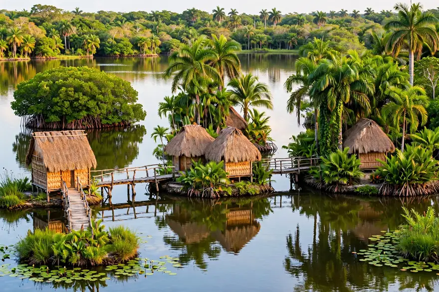

Laguna del Tesoro y Guamá
El mayor espejo de agua dulce de la zona: 16 km² de superficie, 5 km de diámetro y unos 4 metros de profundidad media. Su nombre viene de una leyenda: los indios, antes que entregar sus riquezas a los conquistadores, las arrojaron al fondo del lago.
En el centro de la laguna está Guamá, la réplica de una aldea taína construida sobre islotes conectados por puentes de madera. Sus 25 esculturas a tamaño natural —obra de la artista Rita Longa— recrean la vida aborigen con personajes como Dayamí, Abey el cazador de cocodrilos y el cacique Guamá.
El Hotel Guamá, de cabañas palafíticas sobre el agua, permite dormir literalmente sobre la laguna y despertar con el canto de las aves.
- Cómo llegar: Lancha desde Boca de Guamá: ~4 km de canal + ~3 km de navegación en la laguna
- Qué hacer: Paseo en lancha, aldea taína, pesca deportiva de trucha (captura y suelta), avistamiento de aves al amanecer
- Mejor momento: Amanecer y atardecer para aves; todo el año para la lancha
- Dato curioso: La leyenda del tesoro indígena aún atrae a buscadores soñadores